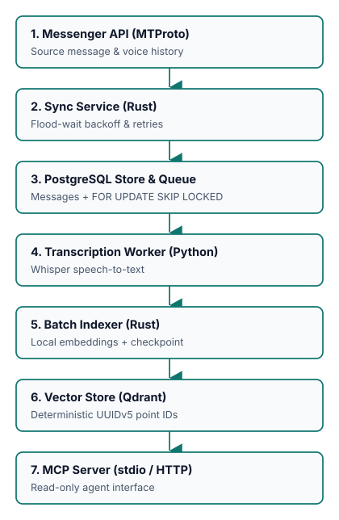
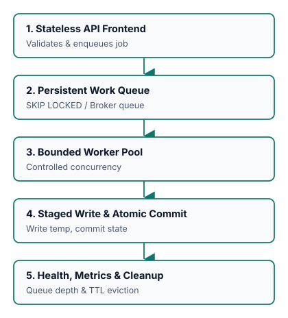

Java & JVM Engineering
Enterprise backend services across Java 6 to Java 25 using Spring Framework, Spring Boot, JPA/Hibernate, and JVM internals spanning concurrency, class loading, and the Java Memory Model.
Tallinn, Estonia
Senior Software Engineer — Java & Distributed Systems
Senior Software Engineer specialising in Java backend engineering, distributed systems, event-driven architecture, enterprise integration, JVM concurrency, and production reliability. Experience across Kuehne+Nagel, Oracle, and Taxify (now Bolt), with additional strengths in Python, Rust, and AI/MCP tooling.

Core Capabilities
Backend systems, asynchronous integration, and production reliability built on enterprise Java and polyglot tooling.
Enterprise backend services across Java 6 to Java 25 using Spring Framework, Spring Boot, JPA/Hibernate, and JVM internals spanning concurrency, class loading, and the Java Memory Model.
Reliable backend workloads, fine-grained JVM concurrency utilities, row-locked work queues, and idempotent cross-store pipelines with explicit retry and checkpoint semantics.
Production event-driven services with Apache Kafka and RabbitMQ: Spring Kafka producers/consumers, partitioned per-key ordering, offset/rebalancing management, transactional outbox, idempotent consumers, retry/DLQ topics, Schema Registry, Kafka Streams/Connect, and consumer lag monitoring.
Backend integration services connecting internal and external systems through REST APIs, message queues, structured data transformations, and relational databases.
Build automation, containerised packaging, and deployment pipelines with Maven, Jenkins, GitLab CI/CD, Docker, and Kubernetes.
Automated testing, defect investigation, test suite stabilisation, and production troubleshooting across JUnit, Mockito, JMockit, EasyMock, and Python scripting.
Independent open-source and personal projects combining Rust, Python, local speech transcription, Qdrant vector search, and Model Context Protocol (MCP) servers.
Career Timeline
Chronological engineering record across enterprise Java backend platforms, high-load microservices, and JDK quality infrastructure.
Kuehne+Nagel · Tallinn, Estonia
Senior Java backend engineer developing and maintaining enterprise integration services, distributed workloads, and automated CI/CD pipelines.
Taxify (now Bolt) · Tallinn, Estonia · Taxify rebranded as Bolt
Senior backend engineer developing high-load backend services and REST APIs at Bolt (then operating as Taxify).
Oracle (Oracle Russia & CIS) · Saint Petersburg
Java Core quality engineering, JDK defect investigation, test automation, and distributed test infrastructure.
Software Development & Solutions · Saint Petersburg
Full-cycle development on an enterprise data aggregation web application covering design, implementation, testing, and release.
Bonus Club · Saint Petersburg
Backend core libraries, service utilities, transaction processing software, and Android client integrations.
OAO INRUSKOM · Saint Petersburg
Relational database development and desktop user interface engineering.
Research & Engineering Center of SPb ETU · Saint Petersburg · University engineering internship
University-era engineering internship building scientific data processing, numerical analysis, and visualisation tools.
Engineering Case Studies
Self-directed engineering case studies and verified public repositories spanning Java, Rust, Python, distributed concurrency, semantic search, and AI tooling.


Verified public repositories from github.com/stden highlighting Rust, Java concurrency, JPA, quality automation, and MCP/AI tooling.
JVM-local Java concurrency utility providing reentrant per-entity-ID mutual exclusion, acquisition timeouts, and Comparable ID-order deadlock prevention.
Tests: JUnit 4 concurrency, reentrancy, timeout & deadlock-prevention tests
Spring Framework 6, Hibernate 6, and Jakarta Persistence (JPA) experiments and integration tests built with Maven and H2.
Tests: Maven + H2 JPA integration tests
Dual-panel terminal file manager (ffm) built in Rust with ratatui, background editor LSP diagnostics, and Gherkin BDD tests.
Tests: Cargo unit tests and Gherkin BDD suite
Desktop screenshot utility for Windows and Linux (X11/Wayland portal) with H.264 MP4 screen recording on Windows.
Tests: Cargo tests and Gherkin BDD suite
Python CLI tool querying SonarQube and SonarCloud APIs for bugs, code smells, and quality-gate status to generate bilingual Markdown reports.
Tests: Automated test suite & SonarCloud analysis
Public Rust/Python automation toolkit with MTProto client tooling, LightRAG indexing, Prometheus command metrics, and MCP modules.
Tests: Cargo & Python automated CI/CD checks
Systems Design
Interactive component flows based exclusively on independent personal projects, open-source software, and educational reference architectures—unrelated to any employer systems.
Cross-language personal ingestion pipeline bridging PostgreSQL and Qdrant with at-least-once retries, idempotent UUIDv5 upserts, and read-only MCP tool exposure.
Selected Component
Provides incremental message history and voice attachments subject to upstream rate limits.
Engineering Concepts
Failure handling
Design Trade-off
Rate-limited upstream API requires persistent cursor checkpoints to avoid costly full re-syncs.
Inspect Components (Click or Enter)
Public single-JVM Java concurrency utility providing per-ID mutual exclusion keyed by Comparable identifier without blocking unrelated keys.
Selected Component
Threads inside a single JVM process request exclusive access to work identified solely by generic Comparable entity IDs.
Engineering Concepts
Distributed coordination
Design Trade-off
Strictly JVM-local synchronisation; multi-node services require database locks or an external distributed coordinator.
Inspect Components (Click or Enter)
Standard educational distributed-systems pattern pairing atomic local outbox writes with at-least-once relay delivery and consumer-side deduplication.
Selected Component
Validates incoming requests and executes domain state transitions inside a single local ACID transaction.
Engineering Concepts
Security · Failure handling
Design Trade-off
Avoids brittle two-phase commit across database and message broker.
Inspect Components (Click or Enter)
Standard educational pattern decoupling slow background jobs from synchronous API latency using bounded worker pools and safe retries.
Selected Component
Authenticates requests, enqueues work asynchronously, and returns a job correlation ID immediately.
Engineering Concepts
Security · Observability
Design Trade-off
Keeps request threads fast and predictable instead of blocking on long-running background work.
Inspect Components (Click or Enter)
Deterministic UUIDv5 vector point IDs and consumer deduplication tables prevent duplicate state on retries, though deduplication stores require bounded TTLs and external side effects need separate safeguards.
Transactional outbox relays and durable queues guarantee at-least-once delivery rather than automatic end-to-end exactly-once processing; idempotent consumers reconcile duplicate deliveries.
Advancing sync checkpoints only after downstream upserts succeed and committing outbox rows alongside domain state keeps separate data stores convergent.
PostgreSQL FOR UPDATE SKIP LOCKED uses row-level exclusive locks while skipping locked rows across workers; EntityLocker provides single-JVM per-key ReentrantLock synchronisation.
Bounded worker pools, exponential flood-wait backoff, lease timeouts, and dead-letter queues keep transient failures recoverable without cascading overload.
Queue lag metrics, explicit job state machines, dead-letter alerts, and automated quality-gate checks (SonarQubeChecker) keep faults diagnosable.
Least-privilege read-only MCP interfaces, stateless API input validation, and isolating runtime credentials away from AI agent tool surfaces.
Technical Matrix
Organised by practical depth and evidence—distinguishing primary professional expertise from additional role exposure, independent projects, and exploratory familiarity.
Primary enterprise backend engineering technologies demonstrated in production roles.
Asynchronous brokering, relational persistence, caching, and vector stores.
Build tools, containerisation, CI pipelines, and infrastructure tooling.
Automated verification, mocking frameworks, BDD/E2E testing, and CI quality gates.
Additional professional backend/frontend languages alongside independent systems work.
Independent engineering projects and AI-assisted development workflows.
Academic Background
Saint-Petersburg Electrotechnical University "LETI"
1999 – 2005
Recruiter & Hiring Contact
Based in Tallinn, Estonia. Direct contact channels and role-specific ATS-friendly PDF resumes generated from a single verified profile.
Senior backend and distributed systems engineering roles
International Java / Spring Boot backend engineering teams
Distributed backend, event-driven architecture & reliability engineering teams
International backend & high-reliability integration engineering teams
High-scale Java / distributed backend engineering teams (reference template; use npm run cv:job for private applications)
AI platform, semantic search & Model Context Protocol engineering teams
Comprehensive career history, independent project case studies & open-source record